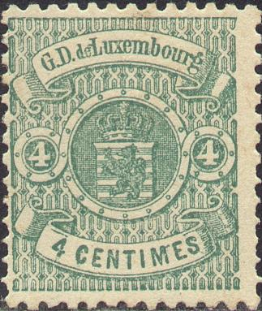
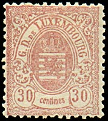
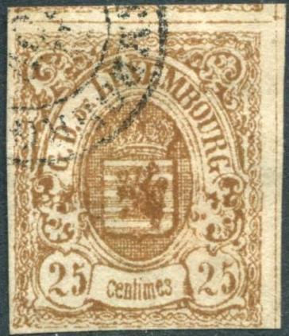
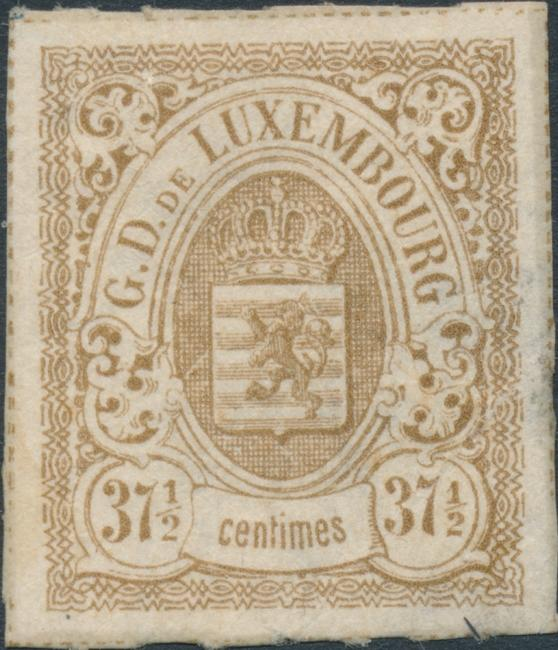
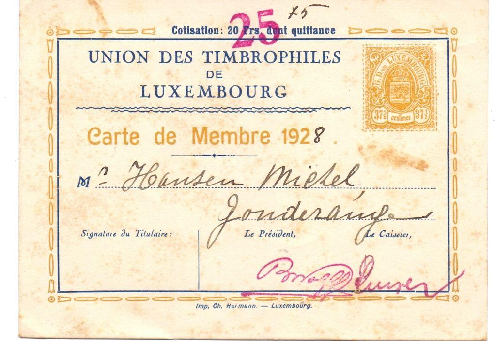
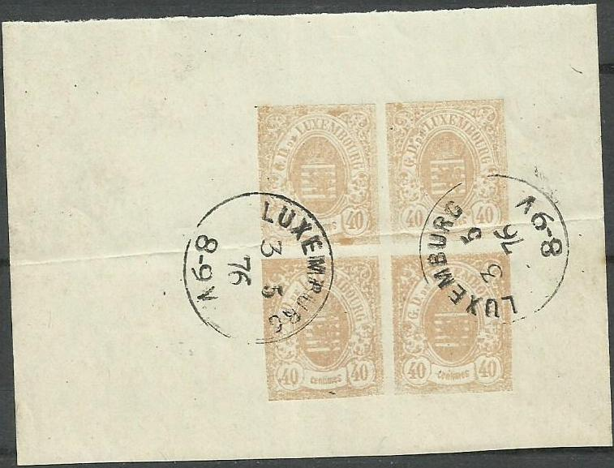
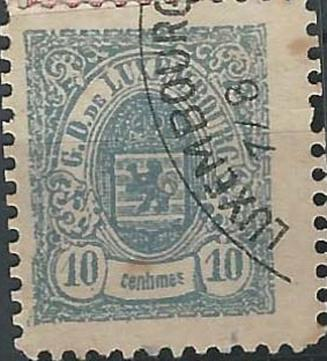

Return To Catalogue - Luxembourg 1859-1881, forgeries, part 1 - Luxembourg 1859-1881, forgeries; Fournier and Sperati - Luxembourg 1859-1881
Note: on my website many of the
pictures can not be seen! They are of course present in the
catalogue;
contact me if you want to purchase it.

For Luxembourg 1859-1881, forgeries, part 1, click here.


Forgeries of the 25 c stamp
Other forgeries:
Probably a forgery of the 40 c, or at least the cancel is forged
(four-ring cancels were not used in Luxembourg).


Left genuine, right forgery. Images obtained from the Forgeries
idenfication site of Bill Claghorn
(http://geocities.com/claghorn1p/)
The lettering is different in the above forgery (compare 'GD'). Also, the 'e' of Luxembourg looks like an 'o' with a crossbar. The cross on top of the crown is very badly done. Guidelines can be found in this forgery around the stamp, which does not exist on the genuine stamps. This forgery also exist with a 'PD' cancel.


Another 2 c and a 4 c yellow forgery made by the same forger as
the above 2 c forgery. Note again the guidelines around the
stamps.

Forged 30 c value.
A forged "OFFICIEL" overprint:

(Forged overprint)

Different type of the 37 1/2 c brown, most likely a forgery. Note
the cross on the crown, the paws on the lion, the different
"37 1/2", some missing colors in the ornaments left and
right of the lion, etc.

Very primitive 1 c black 'forgery'; perhaps a cut from a
catalogue or album image.

Forged "Un Pranc." overprint.
Some forgeries exist of the 37 1/2 c value by removing the "UN FRANC" surcharge.
'Imperforate' forgeries also exist by clipping of the perforations of later issues. Often the cancellation date can reveal these forgeries. For example, is the following stamp a forgery as well?:

The 25 c blue does not exist imperforate....
On
http://www.filatelia.fi/forgeries/forged_postmarks.html, the
following text can be found (CTO means Cancelled To Order):
The following CTO postmarks are found on the remainders of
the 1875-82-93 issues +Official.
Echternach: 20.11.91.
Esch-sur-Alzette: 25.4.83, 22.5.83, 28.5.83, 22.9.83, 25.4.88,
25.4.89, 14.5.94, 14.5.98.
Ettelbruck B: 25.10.??
Luxemburg: 16.12.76, 4.11.86, 15.4.88.
Luxembourg-Ville: ??.11.88, 31.10.91.
Mersch: 28.?9.??.
Postes Relais Nr 13: 8.7.85.
Rodange: 31 7 86.
Rumelange: 10.11.??, 18.??.??.


Most likely forged ESCH SUR ALZETTE cancels.



Some kind of reprints of the 10 c blue value?


Another forgery with a strange "LUXEMBOURG 7/6" cancel.
Click here for Luxembourg 1859-1881 forgeries made by Fournier and Sperati
Stamps - Timbres-Poste - Briefmarken


{kind=link}
{kind=link}
{kind=link}
{kind=link}
{kind=link}